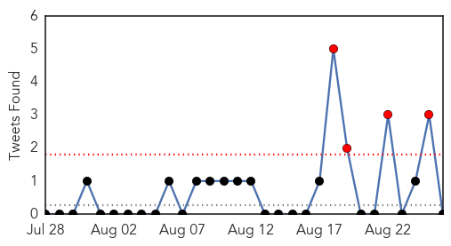
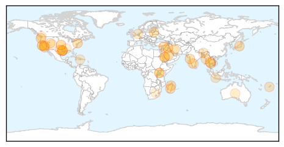

Ebola
30-Day Web Trend
1 alerts, 0 warnings

30-Day Twitter Trend
0 alerts, 0 warnings

Article Locations

Article Confidences

Top Articles:
- 1.000
- First Week With No New Ebola Cases
- 1.000
- First Week With No New Ebola Cases
- 1.000
- Sierra Leone celebrates milestone on road to ending Ebola - Sierra Leone
- 1.000
- Sierra Leone: Sierra Leone celebrates milestone on road to ending Ebola
- 1.000
- Ebola News: Deadly Virus Reappears in Liberia, Claims Life of Teenager
- 0.999
- Sierra Leone's last known Ebola patient leaves hospital
- 0.999
- Sierra Leone Discharges Last Ebola Patient
- 0.999
- New Ebola outbreak cases stay at three, limited to Guinea
- 0.999
- Sierra Leone discharges last Ebola patient
- 0.999
- Liberia has second confirmed Ebola case
- 0.998
- Celebrations at Treatment Center as Sierra Leone Declared Ebola Free
- 0.998
- As Sierra Leone waits for Ebola all-clear, its emotional scars will take longer to heal
- 0.993
- Recovery, Hope as Sierra Leone battles effects of Ebola
- 0.993
- US military to put up tent at Liberia Ebola clinic
- 0.991
- Ebola concerns emerge in Columbus
- 0.991
- Ebola concerns emerge in Columbus
- 0.990
- WHO to Study Use of Sanctions to Punish Countries as Part of Global Epidemic Response
- 0.987
- WHO to study use of sanctions as part of global epidemic response
- 0.987
- Sierra Leone's Last Ebola Patient Released, But Nation Not Yet 'Ebola-Free'
- 0.980
- Sweden hit with double-whammy Ebola scare
- 0.979
- Boston Physician Starts Campaign for Ebola Health Workers
- 0.979
- Sierra Leone: WHO Ebola Situation Report - 26 August 2015
- 0.975
- Sierra Leone releases last known Ebola patient
- 0.967
- [Video] Quick, paper-based Ebola test may help diagnosis in remote areas
- 0.961
- Columbus Public Health: Patient Has Other Illness, Not Ebola
- 0.957
- WHO 'could use sanctions' to fight Ebola
- 0.953
- Political challenges, not just scientific ones, shape response to epidemics
- 0.918
- NATCOM all set for Big Data & Ebola International Meet
- 0.850
- Who Supports Epidemiology Training
- 0.840
- Church in Sierra Leone reacts to Ebola milestone Vatican Radio
- 0.792
- West and Central Africa Region Weekly Humanitarian Snapshot 18 – 24 August 2015 - Mali
- 0.751
- Helping farmers prevent hunger in Ebola-hit countries
- 0.655
- 93 Days: Filmmakers narrate complexity of Ebola in new movie
- 0.632
- WHO: Work Underway to Better Respond to Global Epidemics
Top Tweets:
- 0.990
- Experimental post-exposure antiviral treatment may protect humans from Ebola virus - Medical Xpress http://t.co/iwrKrXW5Mg ebola EVD
- 0.976
- Antiviral-based therapies have potential to protect humans from deadly Ebola virus - News-Medica http://t.co/xXidJhACFZ ebola EVD
- 0.969
- Why Sierra Leone's “last” case of Ebola may not be its last - Quartz http://t.co/c5wkcn9asq ebola EVD
- 0.969
- Why Sierra Leone's “last” case of Ebola may not be its last - Quartz http://t.co/UNlcStpPjQ ebola EVD
- 0.958
- Global health rules need teeth: Ebola panel chief - Politico http://t.co/HGngJZCKZW ebola EVD
- 0.944
- « Je suis en effet une survivante d’Ebola. Malgré la stigmatisation, je… https://t.co/eLxUG7s6r8
- 0.926
- Epidemiological features and trends of Ebola virus disease in West Africa http://t.co/oH2xV3sBBA
- 0.925
- Ebola virus disease: Effects of respiratoryprotection on healthcareworkers http://t.co/FT46Mwt8TJ
- 0.925
- .@HealthCommCap & @Internews spread accurate information about Ebola to combat fear caused by the virus in Liberia http://t.co/GTa5mCISxP
- 0.888
- Sierra Leone released its last known Ebola patient. Now nation begins 42-day countdown to be considered Ebola-free http://t.co/a0rKLaDu0c
- 0.842
- 93 Days: Filmmakers narrate complexity of Ebola in new movie - The Nation Newspaper http://t.co/uwb7X7PmjB ebola EVD
- 0.832
- Ebola response panel studying ways to enforce compliance with key UN legal ... - UN News Centre http://t.co/Io8wWbwm7o ebola EVD
- 0.828
- Woman being treated at Grant hospital; no Ebola test planned for now - Columbus Dispatch http://t.co/URCLEAqdpw ebola EVD
- 0.828
- Persistence of Ebola Virus in Sterilized Wastewater http://t.co/XGBJiOZIpb
- 0.826
- Ebola medics cry foul over pay - New Vision http://t.co/B7VVLnA4Uu ebola EVD
- 0.752
- Why Sierra Leone's “last” case of Ebola may not be its last:... http://t.co/AAl4bClU1Y
- 0.752
- Why Sierra Leone's “last” case of Ebola may not be its last - Quartz http://t.co/OTz1icRusY
- 0.707
- Nancy Snyderman Breaks Silence on Ebola Nightmare, NBC News: "People Wanted Me ... - Hollywood Reporter http://t.co/tHTuWUKYii ebola EVD
- 0.701
- RT: Only new ebola cases in W Africa were from Guinea last wk, all 3 from Conakry and have high exposure risk, per WHO htt…
- 0.695
- Ebola Virus Epidemiology, Transmission, and Evolution during Seven Months in SierraLeone http://t.co/Nk9KdbFtby
- 0.635
- Ebola outbreaks: strategies for effective epidemic management, containment and control http://t.co/tyTDuAMs1f
- 0.611
- Ebola: Did experimental drug used on British patients stop them developing the ... - The Independent http://t.co/PaMd8hNNyF ebola EVD
- 0.598
- 26 Aug - news pouch on avianflu avianinfluenza Ebola EbolaResponse MERS is here: http://t.co/URJQ3dd9FE
- 0.581
- Strengthening healthsystems – lessonslearned from the Ebola response HEART_RES http://t.co/Dw0ge2Q8xA
- 0.559
- Antiviral-based therapies have potential to protect humans from deadly Ebola virus - http://t.co/4phXncKnif http://t.co/vxVDXftxfQ
- 0.542
- Good video on Ebola vaccine trial in Guinea and health worker interest/latest results https://t.co/erRxhaA0AI
- 0.520
- Return of the Rebel: Legacies of War and Reconstruction in West Africa’s Ebola Epidemic @IDS_UK http://t.co/538K5VNrC0
Unknown
30-Day Web Trend
0 alerts, 6 warnings
30-Day Twitter Trend
10 alerts, 4 warnings

Article Locations
Article Confidences

Top Articles:
- 0.978
- Taiwan issues travel alert for Middle East over MERS concerns
- 0.931
- Viral health risks : Advisory on MERS still not finalised
- 0.917
- Chicago Tribune
- 0.917
- Chicago Tribune
- 0.917
- Chicago Tribune
- 0.917
- Chicago Tribune
- 0.917
- Chicago Tribune
- 0.917
- Chicago Tribune
- 0.916
- Death of Sanjeevani actor due to Shingles creates panic among doctors
- 0.912
- Warning up against Japanese encephalitis in Cordillera
- 0.910
- The world windows to Thailand
- 0.891
- More African Swine Fever Found in Lithuanian Backyard Pigs
- 0.890
- Pneumonic plague kills eight in Madagascar
- 0.871
- CDC Confirms 11 Cases of Human Plague in US
- 0.848
- Same level for Salmonella and Campylobacter but Listeria jumps
- 0.822
- Increase in Plague Cases Linked to... California Drought?
- 0.773
- Less patients reporting with TB at Mulago
- 0.770
- Chipotle Has Reportedly Made Dozens of People Sick – Dozens of Burrito Lovers Got Sick from Chipotle
- 0.767
- Notes from the Field: Tickborne Relapsing Fever Outbreak at an Outdoor Education Camp – Arizona, 2014.
- 0.744
- Health officials investigate another plague case in Yosemite
- 0.733
- BLM confirms Mesa Colorado woman infected with Tularemia
- 0.727
- Leptospirosis death
- 0.724
- Burmanet Myanmar Now: Floods cause acute water shortages in hundreds of villages – Htet Khaung Linn
- 0.697
- Patients being given unnecessary meds
- 0.685
- Texas teen fighting a brain-eating amoeba after swimming in lake > KAGS TV
- 0.684
- Urgent need to address NCDs and ageing
- 0.681
- Infant death probe begins
- 0.658
- Indonesia on MERS Lookout as Hajj Season Begins
- 0.654
- County residents advised not to eat recreationally harvested bivalve shellfish
- 0.651
- Texas teen has deadly infection after contact with amoeba - MyNorthwest
- 0.649
- Sorry, deze pagina kon niet gevonden worden.
- 0.634
- Local Clams and Mussels Could Poison You, California Public Health Warns
- 0.629
- Keeping medical records ready allows patients to be own health advocates
- 0.604
- GenRx Tamoxifen (tamoxifen) Drug
- 0.595
- Texas Teen Has Deadly Infection After Contact With Amoeba « CBS Dallas
- 0.593
- Prep - Page 8 - SkyscraperCity
- 0.590
- Diarrhoea claims four lives in Gaya, Speaker unhappy with health service delivery
- 0.575
- Mississippi State Department of Health urges water safety alert
- 0.571
- Health department warns Grand County residents of infectious disease in nearby Colorado
- 0.567
- Reservoir dogs and furious rabies
- 0.565
- FLASH : Total paralysis at the border, 20,000 jobs threatened in Haiti
- 0.529
- America's Best Racing. The Jockey Club
- 0.527
- Parallels between leukemia and HIV hint at cure
- 0.526
- Best friend turns deadly foe—India’s rabid street dogs are killing thousands every year
- 0.521
- SA miners have worst TB epidemic in the world
- 0.509
- The Latest in AIDS Research from UNC Chapel Hill
Top Tweets:
-
No tweets found for Aug 26, 2015